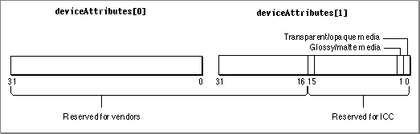

Device Attribute Values for Version 2.x Profiles
The ColorSync Manager defines the CM2Header structure (page 3-43) to represent the profile header for the version 2.x profile format defined by the ICC.The deviceAttributes field of the CM2Header structure is an array of two unsigned long values whose bits specify information about a profile. The ICC reserves the use of bits 0 to 15 of deviceAttributes[1]and has assigned values to bits 0 and 1. All other bits of the deviceAttributes field are reserved for use by color management system (CMS) vendors. Figure 2-2 shows the bit assignments for the deviceAttributes field.Figure 2-2 The deviceAttributes field of the CM2Header structure

The following enumeration defines masks your application can use to set or test various bits in the deviceAttributes field, an array of two longs in the CM2Header structure.
enum { /* these bits of the deviceAttributes[0] field are defined and reserved by the device vendor */ cmVendorReservedAttr0Mask = 0xFFFFFFFF, /* these bits of the deviceAttributes[1] field are defined and reserved by the device vendor */ cmVendorReservedAttr1Mask = 0xFFFF0000, /* these bits of the deviceAttributes[1] field are defined and reserved by ICC */ cmICCReservedAttr1Mask = 0x0000FFFF, /* if bit 0 is 0 then reflective media, if 1 then transparent media */ cmReflectiveTransparentMask = 0x00000001, /* if bit 1 is 0 then glossy media, if 1 then matte media*/ cmGlossyMatteMask = 0x00000002 };Enumerator descriptions
- cmVendorReservedAttr0Mask
- Bits 0 to 31 of deviceAttributes
[0]are reserved for use by vendors. Use the cmVendorReservedAttr0Mask mask to clear all bits in deviceAttributes[0]that are not vendor-reserved bits. Currently all bits are vendor reserved.- cmVendorReservedAttr1Mask
- Bits 16 to 31 of deviceAttributes
[1]are reserved for use by vendors. Use the cmVendorReservedAttr1Mask mask to clear all bits in deviceAttributes[1]except the vendor-reserved bits.- cmICCReservedAttr1Mask
- Bits 0 to 15 of deviceAttributes
[1]are reserved by the ICC. Use the cmICCReservedAttr1Mask mask to clear all bits in deviceAttributes[1]except the ICC-reserved bits.- cmReflectiveTransparentMask
- Bit 1 of deviceAttributes
[1]specifies whether the media is transparent or reflective. If it has the value 0, the media is reflective; if it has the value 1, the media is transparent. Use the cmReflectiveTransparentMask mask to clear all bits in deviceAttributes[1]except the transparent/reflective bit.- cmGlossyMatteMask
- Bit 2 of deviceAttributes
[1]specifies whether the media is glossy or matte. If it has the value 0, the media is glossy; if it has the value 1, the media is matte. Use the cmGlossyMatteMask mask to clear all bits in deviceAttributes[1]except the glossy/matte bit.